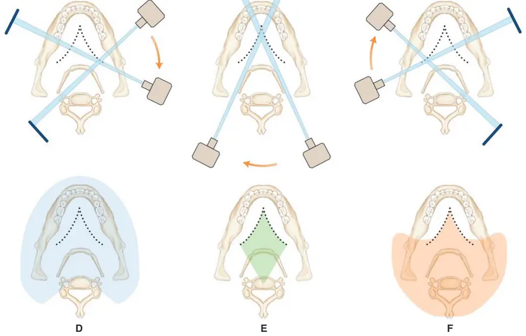
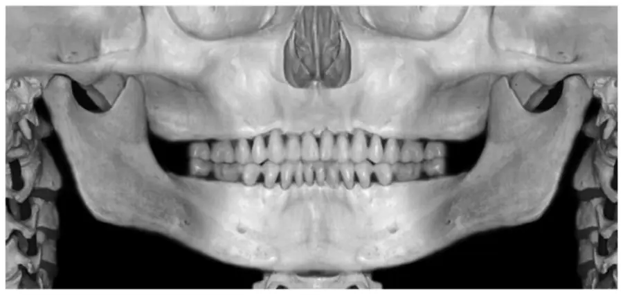

نسخه استخراجشده؛ ترجمه یا تأیید علمی انجام نشده است. وضعیت: captured
چرا سه نوع تصویر داریم؟ «بهدلیل ماهیت چرخشی منبع و گیرنده، پرتو ایکس برخی ساختارهای آناتومیک را دو بار در یک چرخهی اکسپوز قطع میکند.» و سرنوشت هر جسم را محلش نسبت به مرکز چرخش تعیین میکند.

۱) تصویر واقعی — ناحیهی آبی (شکل ۸٫۸D): «اجسامی که میان مرکز چرخش و گیرنده قرار دارند تصویر واقعی میسازند.» ولی درون همین ناحیه هم دو سرنوشت هست: «اجسامی که درون فوکال ترافاند تصاویر نسبتاً تیز میسازند، در حالی که تصاویر اجسام بیرون از فوکال تراف محواند.»
یک مثال روشن: راموس سمت چپ که میان مرکز چرخش و گیرنده است، تصویر واقعی تیز میسازد. ولی استخوان هیوئید و ستون فقرات گردنی که «دور از مرکز فوکال تراف و نزدیکتر به منبع»اند، تصویر واقعی محو و بزرگشده میسازند.
۲) تصویر دوتایی — ناحیهی سبز (شکل ۸٫۸E): «اجسامی که خلف مرکز چرخشاند و دو بار توسط پرتو قطع میشوند تصاویر دوتایی میسازند.» و ساکنانش را بشناس: «استخوان هیوئید، اپیگلوت، و ستون فقرات گردنی — که همگی تصاویری روی هر دو سمت راست و چپ تصویر میاندازند.»
۳) تصویر شبح — ناحیهی نارنجی (شکل ۸٫۸F): «برخی اجسام میان منبع پرتو و مرکز چرخش قرار دارند. این اجسام تصویر شبح میسازند.»
و تصویر شبح سه نشانهی شاخص دارد که با هم آن را لو میدهند:
و مثالهای کلاسیک: راموس سمت راست شبحش را روی سمت چپ تصویر میاندازد و برعکس، هیوئید و ستون گردنی هنگام تصویربرداری نواحی قدامی شبح میسازند، کام سخت و تنه و زاویهی مندیبل شبحهای آشکاری دارند.
و یک منبع شبح که کاملاً در اختیار توست: «لوازم فلزی مانند گوشواره، گردنبند و گیرهی مو تصاویر شبح میسازند که به شکل تصاویر رادیواوپک محو ظاهر میشوند و میتوانند جزئیات آناتومیک را بپوشانند، تغییرات پاتولوژیک را پنهان کنند، یا تغییرات پاتولوژیک را تقلید کنند.»
و یک نکتهی ظریف: «برخی نواحی آناتومیک هم تصویر واقعی-دوتایی و هم شبح میسازند» — همان نواحی همپوشانی ناحیهی نارنجی و سبز.
یک نمونهی زیبا که هر سه مفهوم را در یک ساختار جمع میکند: «کام سخت به شکل دو خط رادیواوپک ظاهر میشود.»

و چرا بالایی بالاست؟ دقیقاً به همان دلیلی که هر شبحی بالاتر میافتد: شیب رو به بالای پرتو. پس این «دو خط» نه یک آنومالی، بلکه امضای هندسهی پانورامیک است.
و در همان تصویر: «سرپیکانهای سیاه تصویر شبح مندیبل سمت مقابل را نشان میدهند.»
قاعدهای که از این میگیری: وقتی روی پانورامیک یک خط اوپک منتشر و بالاتر از حد انتظار میبینی، پیش از آنکه به پاتولوژی فکر کنی، بپرس: آیا این شبح ساختاری از سمت مقابل است؟